<!doctype html>
<html lang="en">
    <head>
        <meta charset="utf-8">
        <title>reveal-md</title>
        <link rel="stylesheet" href="css/reveal.css">
        <link rel="stylesheet" href="css/theme/black.css" id="theme">
        <!-- For syntax highlighting -->
        <link rel="stylesheet" href="lib/css/zenburn.css">

        <!-- If the query includes 'print-pdf', use the PDF print sheet -->
        <script>
          document.write( '<link rel="stylesheet" href="css/print/' + ( window.location.search.match( /print-pdf/gi ) ? 'pdf' : 'paper' ) + '.css" type="text/css" media="print">' );
        </script>
    </head>
    <body>

        <div class="reveal">
            <div class="slides"><section  data-markdown><script type="text/template">## «Ваше положение таково, что понять вам его невозможно»
</script></section><section  data-markdown><script type="text/template">
### Тимур Шемсединов
<br>
КПИ ФИВТ
</script></section><section  data-markdown><script type="text/template">
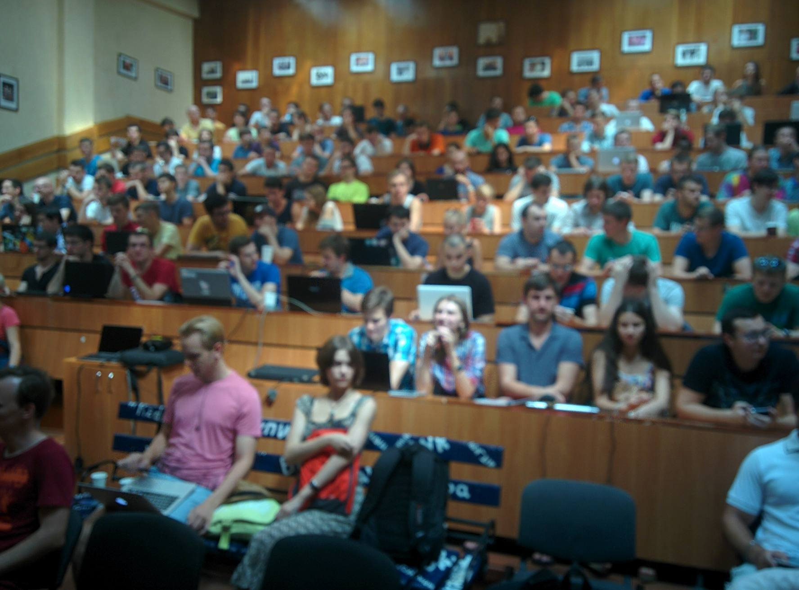
</script></section><section  data-markdown><script type="text/template">
### Что я нашел в КПИ на 1 курсе
- коллектив профессионалов
- большие реальные проекты
- примеры кода и процесса
- мне ставили сложные задачи
- и научили их не бояться
- 20 лет проработал в НИИ СТ
</script></section><section  data-markdown><script type="text/template">

<br>
github.com/HowProgrammingWorks
</script></section><section  data-markdown><script type="text/template">
### Я возвращался в КПИ много раз
- прочитать серию лекций
- работать над проектами в НИИ
- искать кадры для своих проектов
- писать кандидатскую диссертацию
</script></section><section  data-markdown><script type="text/template">
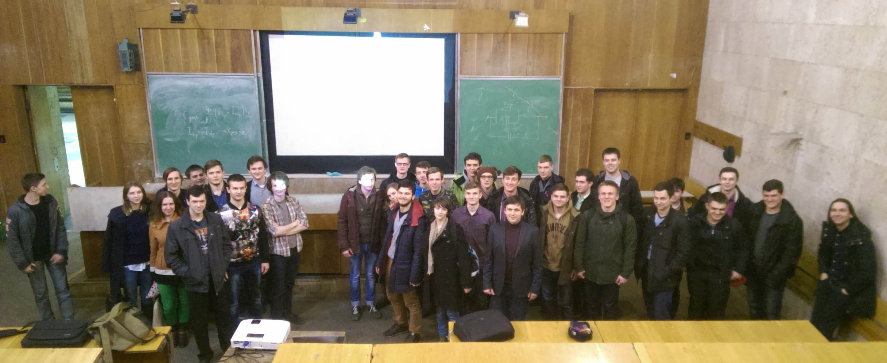
</script></section><section  data-markdown><script type="text/template">
### К чему я пришел
- кадры решают все и учить их нужно самому
- студенты 2-3 курса могут невообразимое
- в ВУЗе много сложностей, но преодолимых
- коллектив должен воспроизводить себя
- нужно передавать опыт
- есть возможность ВУЗам существовать
</script></section><section  data-markdown><script type="text/template">
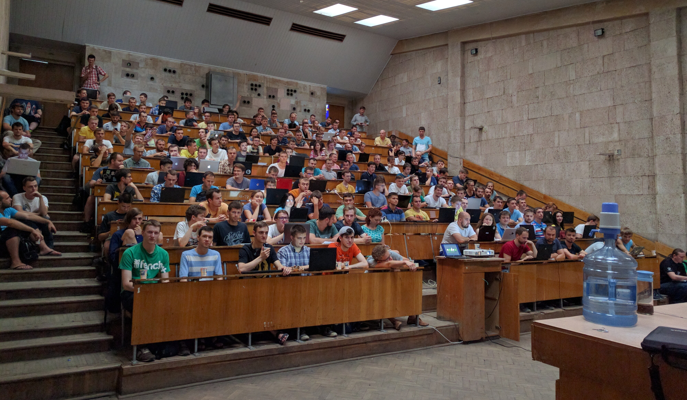
</script></section><section  data-markdown><script type="text/template">
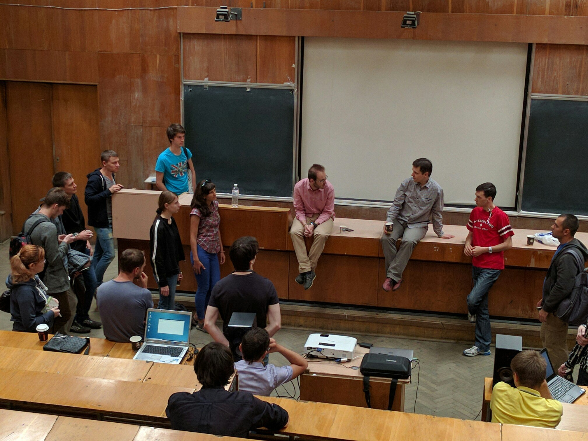
</script></section><section  data-markdown><script type="text/template">
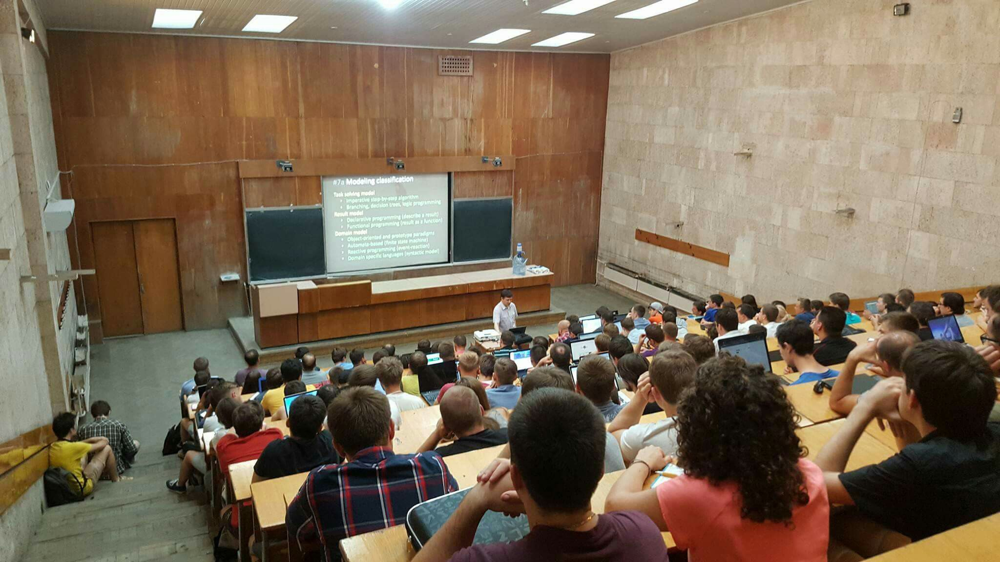
</script></section><section  data-markdown><script type="text/template">
### Переселился в КПИ


</script></section><section  data-markdown><script type="text/template">
### Что сделано за 2 года
- изменения в курсе программной инженерии
- внедрены JavaScript и Node.js
- студенческое конструкторское бюро
- дополнительные семинары и лекции
- летние и зимнии школы
- митапы KievNodeJS теперь проводится в КПИ
  - 100-200 участников
  - более 1100 подписчиков
</script></section><section  data-markdown><script type="text/template">
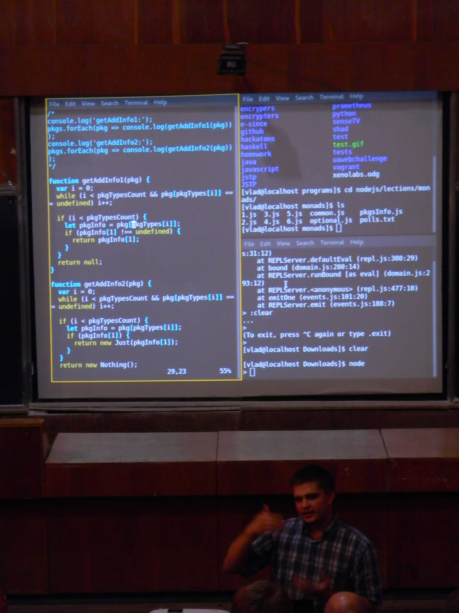
</script></section><section  data-markdown><script type="text/template">
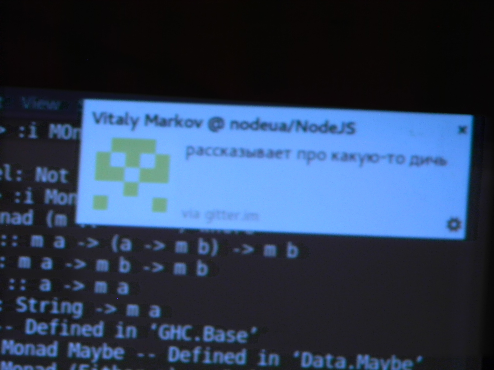
</script></section><section  data-markdown><script type="text/template">
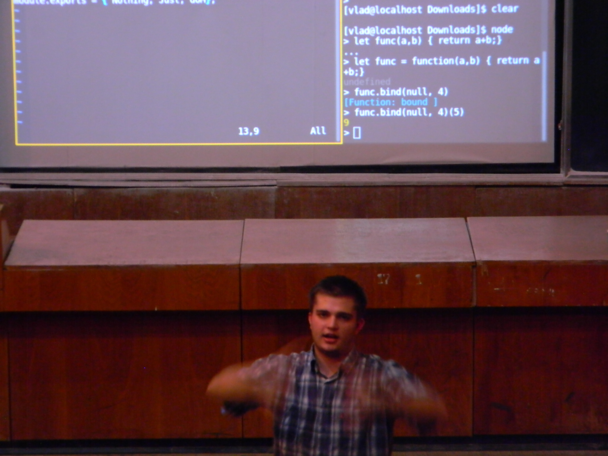
</script></section><section  data-markdown><script type="text/template">
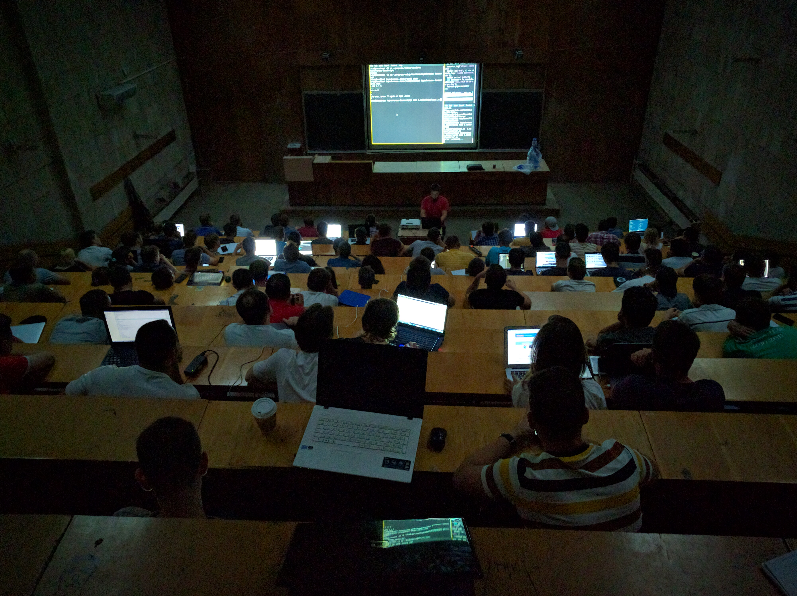
</script></section><section  data-markdown><script type="text/template">
### Стек технологий Metarhia
- цельно спроектированный стек
- унифицированный и free
- коллектив разработчиков-фанатиков
- сервер приложений Impress
- сетевой протокол JSTP >10 ЯП
- СУБД GlobalStorage
- модули: metasync, tickplate и др.
</script></section><section  data-markdown><script type="text/template">
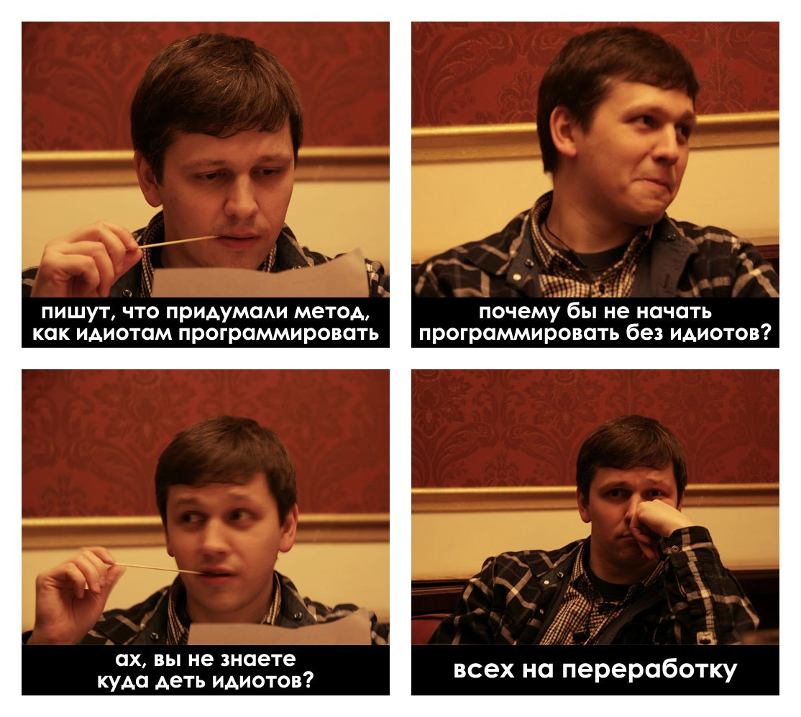
</script></section><section  data-markdown><script type="text/template">
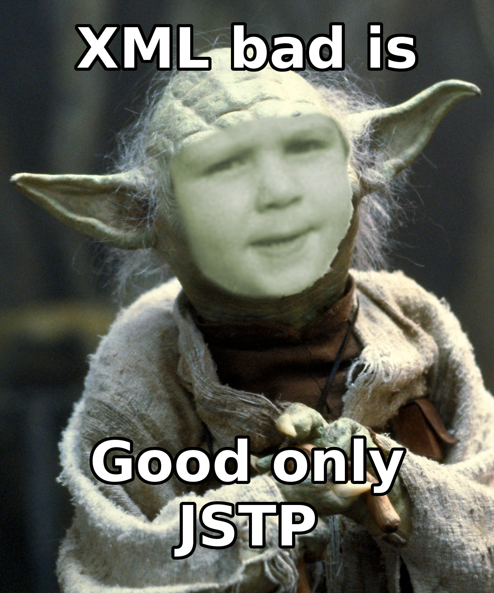
</script></section><section  data-markdown><script type="text/template">
### Внедрено в отраслях:
- интерактивное телевидение SinceTV
- системы высокочастотной торговли
- игры, коммуникационное ПО
- медицина, умная электроника
- управление прикладными облаками
</script></section><section  data-markdown><script type="text/template">

</script></section><section  data-markdown><script type="text/template">

</script></section><section  data-markdown><script type="text/template">
### Open Souce / Free Software
- контрибьютеры Node.js
- не менее 5 преподавателей
- сотрудничество с Китаем
- ни какого страха - только NIH
- люди должны любить свою работу
- интересную, сложную, крутую
- галеры - на переработку
</script></section><section  data-markdown><script type="text/template">
Вы поймете, как это работает

```js
const projection = (meta, obj) => (Object
  .keys(meta)
  .reduce((hash, key) => (hash[key] = meta[key]
    .reduce(
      (val, fn, i) => i === 0 ? obj[fn] : fn(val), null
    ), hash), {}
  )
);
```
</script></section><section  data-markdown><script type="text/template">
И это... оно же просто красивое


</script></section><section  data-markdown><script type="text/template">

</script></section><section  data-markdown><script type="text/template">
### Контакты и ссылки

https://github.com/HowProgrammingWorks
https://github.com/metarhia
https://www.meetup.com/KievNodeJS

Тимур Шемсединов
<br>
timur.shemsedinov@gmail.com
</script></section><section  data-markdown><script type="text/template">
## «Да у нас дыра,<br>но сквозь эту дыру<br>сквозит будущее»
</script></section></div>
        </div>

        <script src="lib/js/head.min.js"></script>
        <script src="js/reveal.js"></script>

        <script>
            function extend() {
              var target = {};
              for (var i = 0; i < arguments.length; i++) {
                var source = arguments[i];
                for (var key in source) {
                  if (source.hasOwnProperty(key)) {
                    target[key] = source[key];
                  }
                }
              }
              return target;
            }

            // Optional libraries used to extend on reveal.js
            var deps = [
              { src: 'lib/js/classList.js', condition: function() { return !document.body.classList; } },
              { src: 'plugin/markdown/marked.js', condition: function() { return !!document.querySelector('[data-markdown]'); } },
              { src: 'plugin/markdown/markdown.js', condition: function() { return !!document.querySelector('[data-markdown]'); } },
              { src: 'plugin/highlight/highlight.js', async: true, callback: function() { hljs.initHighlightingOnLoad(); } },
              { src: 'plugin/notes/notes.js', async: true, condition: function() { return !!document.body.classList; } },
              { src: 'plugin/math/math.js', async: true }
            ];

            // default options to init reveal.js
            var defaultOptions = {
              controls: true,
              progress: true,
              history: true,
              center: true,
              transition: 'default',
              dependencies: deps
            };

            // options from URL query string
            var queryOptions = Reveal.getQueryHash() || {};

            var options = {
  "controls": false,
  "progress": false,
  "hideAddressBar": true,
  "transition": "slide",
  "transitionSpeed": "default",
  "backgroundTransition": "fade",
  "viewDistance": 3
};
            options = extend(defaultOptions, options, queryOptions);
            Reveal.initialize(options);
        </script>
        
    </body>
</html>

